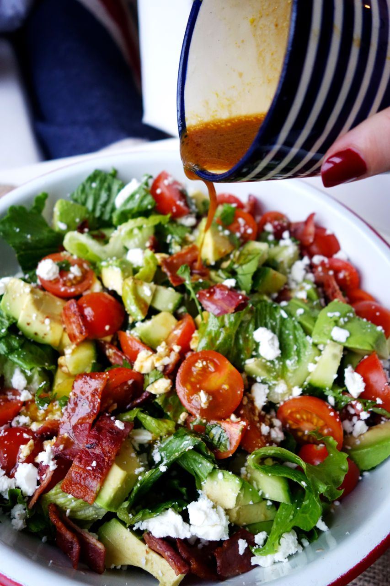

BLT Bowl
It’s the shallow-end of the salad world. Where you can just gently lower yourself in and say “Hey, this isn’t bad at all! In fact… I quite like it!”
If you happen to be a salad dodger who’s trying to be virtuous this month, this is for you.
Just think of it as a BLT, without the bread and with a whole feast of other goodies thrown in for good luck.
s
INGREDIENTS
- Lettuce
- 1 large avocado
- 2 handfuls of cherry tomatoes
- Half a cucumber
- Handful of coriander (cilantro)
- 4 rashers of bacon
- Half a handful of feta cheese
DIRECTIONS
- Cook your bacon until it’s nice & crispy. While it’s sizzling away, chop everything else up into bite-sized squares. Throw it all in a bowl, followed by your bacon (chopped) when it’s done. Crumble your feta over the top.
- Pour about 2 shot glasses of good olive oil into a cup. Add a shot of balsamic vinegar, a tsp of mustard, the juice of a small lemon and a good sprinkle of salt.
- Drizzle over your salad.
